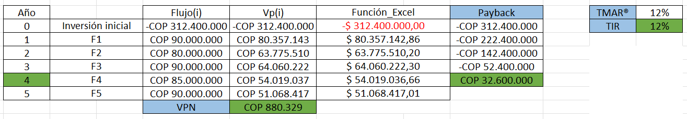
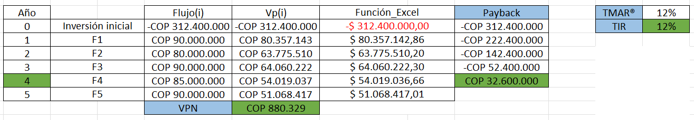

Evaluación económica
Con la intención de corroborar la viabilidad de nuestro proyecto desde un punto de vista económico y en base a lo establecido en el alcance del proyecto, se realizó un estudio entorno a 3 indicadores financieros, los cuales son muy comunes en la toma de decisiones; con esto se hace referencia al VPN, TIR y Payback. Para dar inicio al presente estudio económico, se realizo un estudio de costos, donde se tuvieron en cuenta distintos elementos que conforman la celda. Con el préstamo solicitado y en base a los ingresos que se esperan conseguir, estamos proyectando nuestra empresa a 5 años, tiempo en el cual se espera que este alcance un punto de equilibrio, financieramente hablando. Este es un proyecto a largo plazo, por esto se diseñó este modelo con la intención que el VPN estuviera lo más próximo a 0 y con ello, encontrar el TIR con el cual se puede lograr este cometido. Una vez calculado el valor total que conlleva la implementación de la celda, se asumió un préstamo por dicha cantidad y asumiendo unos ingresos como se estipula en la tabla de Excel. Se calculó el Vp(i) respectivo a cada año y posteriormente se sumó, esto con la intención de encontrar el VPN total, ahora bien, una vez calculado dicho valor, se implementó la función TIR para obtener un porcentaje (%) óptimo para dicha tasa. Respecto al Payback, se calculó sumando a la inversión inicial, el flujo obtenido en el año 1 y posteriormente a este resultado, se sumó nuevamente solo que ahora, se uso fue el flujo del segundo año, este proceso se realizo una y otra vez hasta llegar a un resultado positivo.
 

Como se observa en la tabla anterior, se pueden apreciar 3 valores destacados, los cuales son: TIR, VPN y playback, estos tienen un valor de 12%, COP 880.329 y 4 años respectivamente. En este caso, el TIR del 12% representa la mínima taza aceptable en la cual el proyecto es rentable, dado que se asegura un VPN positivo y cercano a 0, ahora bien, respecto a los 4 años, es el tiempo estipulado en el cual se planea cubrir la totalidad de la deuda con el banco.